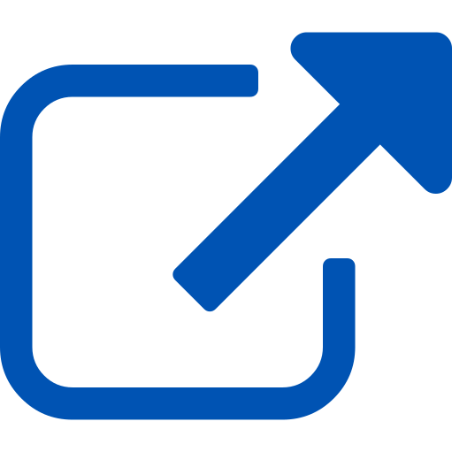

icon made by Dave Gandy from www.flaticon.com ;
icon made by Dave Gandy from www.flaticon.com ;-  icon made by Dave Gandy from www.flaticon.com ;
- icon made by Dave Gandy from www.flaticon.com ;
- exemple de présentation « Achats public responsables : première approche » (pptx, 0,5Mo) a été écrits par la Nouvelle Aquitaine ;
- support de formation à destination des MLDS (pptx, 0,3Mo) a été écrits par la Nouvelle Aquitaine ;
Le code source est disponible.